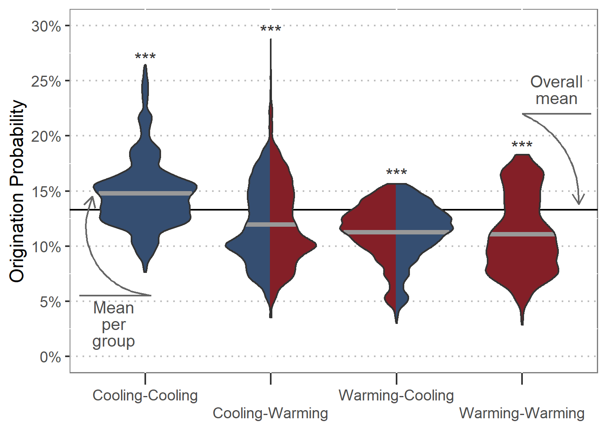

Origination probability in marine fossil groups is largely affected by palaeoclimate interactions
Marine origination rates linked to interactions of past temperature trends with short-term climate change
Gregor Mathes 1, 2, 
@GregorMathes
gregor.mathes@uni-bayreuth.de
Wolfgang Kiessling2 Manuel J. Steinbauer1, 3
1 University of Bayreuth, Germany
2 Friedrich-Alexander University Erlangen-Nuremberg, Germany
3 University of Bergen, Norway
Introduction
Biodiversity dynamics are shaped by a complex interplay between current conditions and historic legacy (Antao et al. (2020), Svenning et al. (2015)). While a simple relationship is often used to link evolution with temperature, short-term climate change likely interacts with previous temperature trends when influencing the pace of origination. Such palaeoclimate interactions have been demonstrated for extinction risk, but the effect on evolutionary dynamics is untested
This poster will be presented interactively and therefore largely refrains from using text. However, you can find a commented version of this poster here.
Methods
We quantified the effect of temperature change interacting with past temperature trends on origination probability using generalised linear mixed effect models with a binomial family error (Bolker et al. (2009)):
\[
glm (extinct ~ ∆Ttrend : ∆Tchange + (1 | Genus))
\]
Results

Figure 1: Total response distributions to palaeoclimate interactions as predicted by generalised linear mixed effect models. Thick grey lines show the mean origination probability per palaeoclimate interaction, and the black line depicts the mean probability for all interactions combined. Asterisks indicate significance for differences of means compared to the overall mean, based on Wilcoxon rank sum tests.
![A) Difference in means between origination probability after cooling-cooling compared to all other palaeoclimate interactions. B) Overall increase of origination probability after cooling-cooling palaeoclimate interactions compared to baseline probability. C) Cohen’s d effect size of the observed change in probability after cooling-cooling palaeoclimate interactions. Red points show estimates given by bootstrapping simulation, brown points estimates given by Bayesian regression, and grey points estimates based on raw output of generalised linear mixed effect models. Grey lines delineate 95% confidence intervals.](figures/combined_effect_sizes.png)
Figure 2: A) Difference in means between origination probability after cooling-cooling compared to all other palaeoclimate interactions. B) Overall increase of origination probability after cooling-cooling palaeoclimate interactions compared to baseline probability. C) Cohen’s d effect size of the observed change in probability after cooling-cooling palaeoclimate interactions. Red points show estimates given by bootstrapping simulation, brown points estimates given by Bayesian regression, and grey points estimates based on raw output of generalised linear mixed effect models. Grey lines delineate 95% confidence intervals.
Disclaimer
This poster was created using open software tools and builds on the R package posterdown. You can find the source code to reproduce this poster here.
References
Antao, Laura, Amanda Bates, Shane Blowes, Conor Waldock, Sarah Supp, and Anne Magurran. 2020. Temperature-Related Biodiversity Change Across Temperate Marine and Terrestrial Systems. Nature ecology & evolution.
Bolker, Benjamin, Mollie Brooks, Connie Clark, Shane Geange, John Poulsen, Henry Stevens, and Jada-Simone White. 2009. Generalized Linear Mixed Models: A Practical Guide for Ecology and Evolution. Trends in ecology & evolution.
Svenning, Jens-Christian, Wolf Eiserhardt, Signe Normand, Alejandro Ordonez, and Brody Sandel. 2015. The Influence of Paleoclimate on Present-Day Patterns in Biodiversity and Ecosystems. Annu. Rev. Ecol. Evol. Syst.